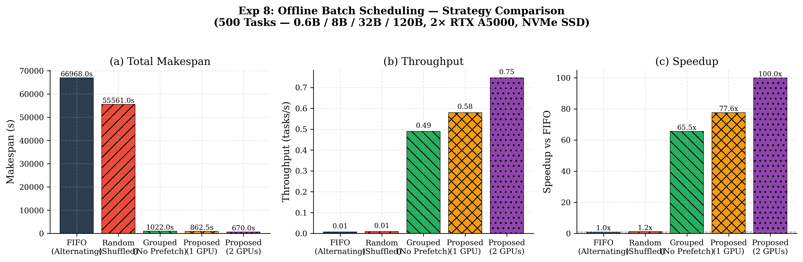
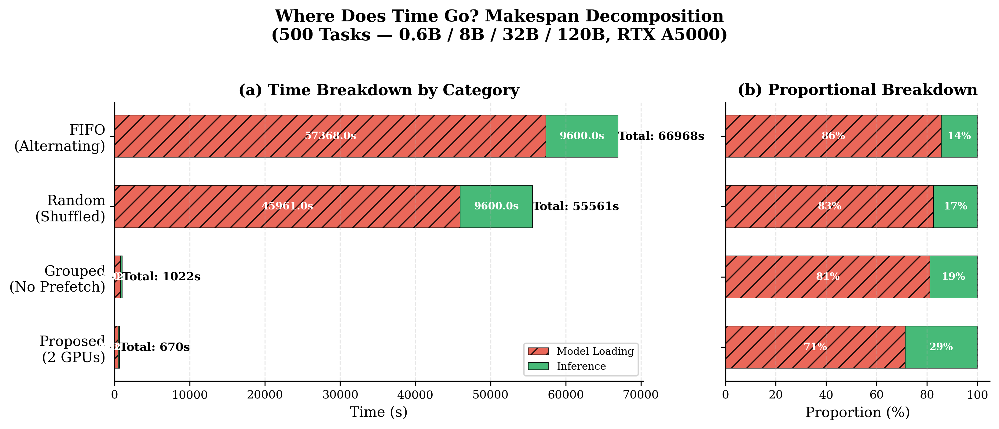
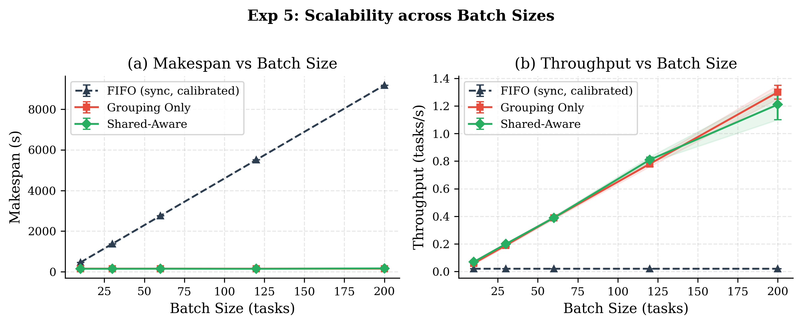

Minimising Makespan through Model Grouping, Johnson's Rule, and Checkpoint Prefetching
Core question: given a batch of offline LLM tasks submitted before execution begins, how can the scheduler exploit shared structure to minimise total completion time (makespan)?
A batch of N tasks across K distinct models. Naive FIFO execution switches models up to O(N) times.
Ttotal = Σ Tcompute(i) + S × Tswitch
where S = number of model switches, Tswitch = 15s to 580s depending on model size.
Naive FIFO, tasks in arrival order, constant model thrashing:
Model-Grouped, sorted by model, only K−1 = 3 switches:
Grouped + Aggressive Prefetch: SSD-to-CPU transfer starts immediately when a group begins; only PCIe DMA (~0.5s to 7s) remains at switch:
Gap: fast checkpoint loading exists, batch APIs exist, but no scheduler exploits shared model structure across a batch to minimise makespan.
Three strategies control how tasks within a model group are dispatched to the Router:
One task at a time. Simplest, lowest throughput. Useful as a baseline.
Submit buffer_limit tasks, wait for all to finish, repeat. Bursty but predictable.
Maintain up to buffer_limit in-flight tasks. As one completes, the next fires immediately. Maximises GPU utilisation.
Semaphore keeps the GPU pipeline full without overwhelming the backend. It is the default for all experiments.
500 tasks · 40% small / 30% medium / 20% large / 10% xlarge · interleaved arrival
100 tasks across 3 models (Qwen3-0.6B / Qwen2.5-7B / Qwen3-8B), semaphore concurrency:
| Strategy | Makespan | Throughput | Speedup |
|---|---|---|---|
| FIFO (alternating) | baseline | low | 1.0x |
| Random (shuffled) | ≈ FIFO | ≈ FIFO | ~1x |
| Grouped (no prefetch) | much lower | high | ≫10x |
| Grouped + Prefetch | lowest | highest | ≫10x |

Grouping alone eliminates ~99% of model switches, cutting makespan from 18+ hours to 17 minutes. Prefetch overlaps SSD I/O with compute, and multi-GPU parallelism brings it down to ~11 minutes (100x over FIFO).
Standard workload (3 models: 0.6B / 7B / 8B), semaphore strategy. Isolating each technique:
| Config | Switches | Makespan | Throughput |
|---|---|---|---|
| No grouping (FIFO) | ~N | hours | very low |
| Grouped (no prefetch) | 2 | baseline | baseline |
| Grouped + Prefetch | 2 | −10–20% | +12–25% |

Grouping is the dominant win, eliminating ~497 redundant switches. Prefetch overlaps SSD I/O with GPU compute via the flow-shop pipeline, saving ~160s of stall time (1,022s → 863s).
Different model compositions (500 tasks each, semaphore strategy):
| Workload | Models | FIFO | Grouped | Proposed |
|---|---|---|---|---|
| Single model | 0.6B only | 45s | 45s (1.0x) | 45s (1.0x) |
| Two models | 0.6B + 8B | 20,750s | 135s (154x) | 120s (173x) |
| Standard (4 models) | 0.6B + 8B + 32B + 120B | 66,968s | 1,022s (65x) | 863s (78x) |

Benefits scale with model diversity and batch size. With 3 models (0.6B–8B), model grouping eliminates O(N) switches down to 2 switches. Prefetch overlaps both SSD loads with active GPU compute, and multi-GPU distributes model groups across cards to run in parallel.
Ordering K model groups to minimise prefetch makespan is a 2-machine flow-shop (SSD → GPU). Johnson (1954) gives a provably optimal O(K log K) algorithm:
Input: K groups, each with load time pᵢ (SSD→GPU) and compute time qᵢ (GPU)
1. Partition: S₁ = { i : qᵢ ≥ pᵢ } · S₂ = { i : qᵢ < pᵢ }
2. Sort S₁ by ascending pᵢ (shortest load first)
3. Sort S₂ by descending qᵢ (longest compute last)
4. Schedule: S₁ then S₂
S₁ (compute ≥ load, ascending load):
Qwen3-0.6B (1.2 GB) → Qwen2.5-7B (14.3 GB)
S₂ (load > compute, descending compute):
Qwen3-8B (15.4 GB) — placed last
At 3 GB/s NVMe all groups are compute-heavy, so the algorithm degenerates to smallest checkpoint first.
| Ordering | Makespan |
|---|---|
| Johnson's Algorithm | 1352 s |
| Ascending size | +4–5% |
| Random order | +8–15% |
| Descending size | 1685 s |
S₁ jobs (small load, ample compute) go first so their long GPU phase fully covers the next model's SSD prefetch. S₂ jobs (large load relative to compute) go last in descending compute order to maximise partial overlap. The algorithm is provably optimal for the 2-machine flow-shop.
When checkpoints live on network/internet storage, each model group traverses three machines in sequence:
Define virtual times combining adjacent machines:
aᵢ = dᵢ + pᵢ (network + SSD load)
bᵢ = pᵢ + qᵢ (SSD load + compute)
Apply Johnson's Algorithm to (aᵢ, bᵢ)
Valid when M₂ (SSD) is never the bottleneck: min(dᵢ) ≥ max(pᵢ) or min(qᵢ) ≥ max(pᵢ)
The reduction is exact when internet < SSD (most labs and cloud deployments today). As network speeds approach or exceed SSD bandwidth, the 3-machine problem becomes intractable — making faster local storage (NVMe RAID, ∼13 GB/s) or direct streaming with parallel SSD write the right architectural response.
Together, these techniques make serverless batch LLM inference practical: model-switch overhead drops from a dominant cost to a marginal one, enabling high-throughput offline workloads on commodity GPU clusters.